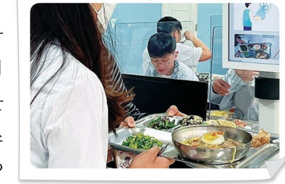

살아있는 교과서 · Ⅱ. 데이터 · 2. 데이터 분석 · 04 77~83쪽
급식 잔반
급식 잔반
데이터 분석
음식물 쓰레기는 전 세계 온실가스 배출량의 약 10 %를 차지한다. 학교 급식 11,916 건의 배식량·섭취량·잔반량 데이터를 미니 코답으로 정렬하고, 메뉴 종류별 평균과 산점도, 메뉴별 평균 잔반율 그래프를 그려 잔반을 줄일 방법을 데이터로 제안해 보자.
🎯 학습 목표 — 문제 해결에 적합한 데이터를 수집하고 분석하여 다양한 학문 분야의 문제를 융합적으로 해결하고, 데이터를 기반으로 자신의 주장을 논리적으로 설명할 수 있다.
문제 해결하기 · 과학 · 환경급식 잔반 데이터 — 문제 정의와 데이터 살펴보기 77~78쪽
문제 정의 유엔환경계획(UNEP)에서 발간한 ‘2021년 폐기물 지수 보고서’에 따르면 한 해 동안 전 세계의 음식물 쓰레기는 온실가스 배출량의 약 10 %를 차지한다고 한다. 생활 속에서 어떻게 음식물 쓰레기를 줄여 환경을 보호할 수 있을까? 급식 잔반 측정기를 통해 수집한 메뉴별 배식량, 섭취량, 잔반량 데이터를 분석하여 해결 방안을 생각해 보자.
데이터 수집 및 구조화 농식품 빅데이터 거래소(kadx.co.kr)에서 내려받은 ‘메뉴별 섭취량·잔반량·배식량 데이터’를 합쳐 가공한 학교 급식 메뉴별 데이터 분석.csv(11,916 행)를 미니 코답에 넣어 두었다.
데이터 속성 구분(범주형) · 급식 메뉴 이름(범주형) · 급식 메뉴 종류: 밥류, 국/찌개류, 반찬류, 면류, 후식류(범주형) · 배식량(g) · 잔반량(g) · 섭취량(g) = 배식량 − 잔반량 · 섭취율(%) = 섭취량 ÷ 배식량 × 100 · 잔반율(%) = 잔반량 ÷ 배식량 × 100 (모두 수치형)
미니 코답급식 데이터 11,916 행 — 머리글을 눌러 정렬해 보자
급식 메뉴 종류
1어떤 급식의 배식량이 200 g, 잔반량이 50 g이면 섭취량은 g, 섭취율은 %, 잔반율은 %이다.
2잔반량을 내림차순으로 정렬하면 맨 위에 오는 메뉴(배식량 200 g을 모두 남김)는 이다. 이 메뉴의 종류는 이다.
그래프로 표현하기급식 메뉴 종류별 비율과 평균 79~81쪽
1가장 많이 제공된 급식 메뉴 종류는 (약 %)이고, 평균 배식량이 가장 많은 종류는 이다. 평균 잔반량이 가장 적은 종류는 이다.
2평균 잔반율이 가장 높은 종류는 (약 %)이고, 평균 섭취율이 가장 높은 종류는 이다.
그래프로 표현하기배식량과 섭취량·섭취율의 상관관계 80쪽
세로축
1배식량과 은 상관관계가 뚜렷하고, 배식량과 은 상관관계가 거의 없다. 이를 통해 는 것을 알 수 있다.
해 보기 · 개별급식 메뉴별 평균 잔반율을 그래프로 표현하고 의미 해석해 보기 82쪽
가로축은 ‘급식 메뉴 이름’, 세로축은 ‘잔반율(%)’로 설정하고, ‘평균’을 표시하여 메뉴별 평균 잔반율을 비교해 보자.
정렬강조
1평균 잔반율이 20 % 이하인 메뉴를 모두 고르시오.
2평균 잔반율이 50 % 이상인 메뉴를 모두 고르시오.
3(1), (2)에서 찾은 메뉴의 공통점을 바탕으로 결과를 다양하게 해석해 보자.
데이터 의미 해석 · 융합적 문제 해결급식 잔반을 줄이는 방법 제안하기 81쪽
급식 데이터 분석을 통해 학생들은 밥을 반찬보다 더 잘 먹는다는 것을 알 수 있었고, 국/찌개류는 배식량이 많은 것에 비해 평균 잔반율이 높다는 것을 알 수 있었다. 배식량이 많으면 섭취량도 같이 늘어나지만 섭취율과는 관계가 거의 없는 것으로 보아 양보다는 음식의 종류에 따라 섭취율이 결정된다는 것을 알 수 있었다.
1데이터에 기반한 주장 분석 결과를 근거로 우리 학교 급식 잔반을 줄이기 위한 방법을 2 가지 제안해 보자.
2융합적 문제 해결에 적용하기 이 데이터 분석 방법을 학교의 다른 활동(동아리, 행사 등)에 적용하는 아이디어를 써 보자.
핵심 콕콕 정리하기데이터 분석 83쪽
1데이터 분석
데이터 기반 문제 해결은 문제 정의 → 데이터 수집 및 구조화 → 데이터 → 그래프로 표현하기 → 데이터 의미 의 과정으로 이루어진다. 산점도에서 한 속성이 증가할 때 다른 속성도 증가하면 가 있다고 한다.
| 평가 기준 | 스스로 평가 |
|---|---|
| 컴퓨팅 사고력 사례를 중심으로 데이터 간의 관계를 파악하고, 데이터에 기반하여 의미를 해석할 수 있는가? | |
| 컴퓨팅 사고력 응용 소프트웨어를 활용하여 데이터의 수집과 관리, 분석을 수행할 수 있는가? | |
| 디지털 문화 소양 데이터 분석 결과로 환경 문제를 해결하는 방안을 제시할 수 있는가? |
제출학생 정보 · 제출하기
모든 활동을 마친 뒤 제출하면 전체가 한 번에 채점되고 피드백이 나타나요. 학년을 꼭 적어 주세요 — 답안은 선생님 스프레드시트(내 학년 시트의 정보 탭)에 기록돼요.